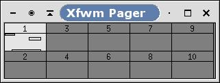

Figure 6-7. XFPager
XFPager is a small tool that provides a miniature view of all XFwm desktops. It is started from the startup dialog.
XFPager is able to receive and send events to windows running on each XFwm desktop. If you move a window on the screen, its image will be moved in XFPager, and if you move a window in the pager, the windows will be moved on the screen accordingly.
By default, XFPager will manage the default 10 screens of XFce, but it can also manage up to 32 screens !